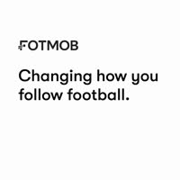
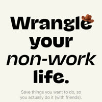
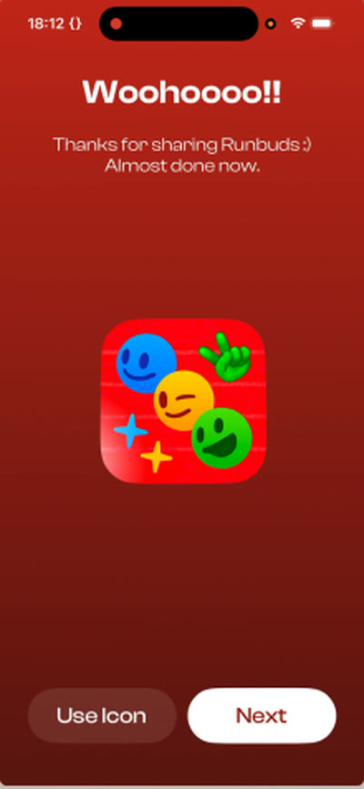
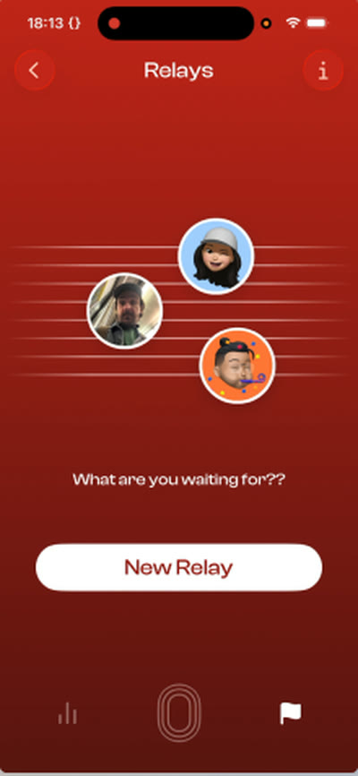
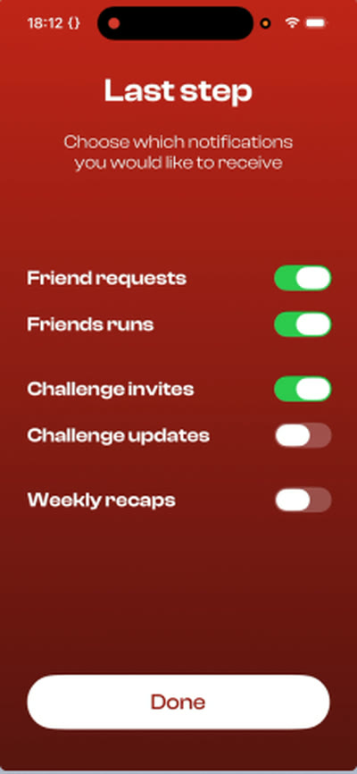

record a flow.
get a figma-ready teardown.
screen recordings
148 items · 1 selected
 0:52
0:52
2:06 0:19
0:19
0:33-
Delighted
Screen 1

Voice · 0:12“Oh, nice. That’s pretty cool.”
-
Confused
Screen 2

Voice · 0:38“I’m not sure what this is about.”
-
Meh
Screen 3

Voice · 0:17“Okay, last step.”
one click later.
you talked while you tapped. every word, pinned to its screen.
and how it felt, screen by screen.
modify, annotate — it’s an open canvas.
show your team what you found.
copy to figmathree steps, then it’s a board.
no scrubbing. no screenshotting. no cropping.
- 01
drop a recording
any app, any flow. the .mov already in your photos works.
- 02
break it down
every distinct screen, found for you. six useful screens instead of a minute of video.
- 03
copy to figma
screens and notes land as layers, ready for the review.
the practical bits.
- runs on your mac
- Scanning, transcription, key points and tap detection all happen on-device. Your recordings never leave your machine.
- built for macOS 26
- A native app, not a wrapper. Glass toolbars, drag and drop, keyboard shortcuts, ⌘K.
- copy to figma
- Every screen and note arrives as its own layer, so you can move and mark them up like anything else on the canvas.
- voice is a bonus
- Silent recordings work exactly the same. Say things when you have them — never the price of entry.
- free at launch
- Version 1.0 is free, with no in-app purchase.
found a flow worth studying?
give it a place on your canvas.
download for macfree at launch · macOS 26+
“I kept screen-recording apps and never doing anything with the recordings. This is the missing step.”